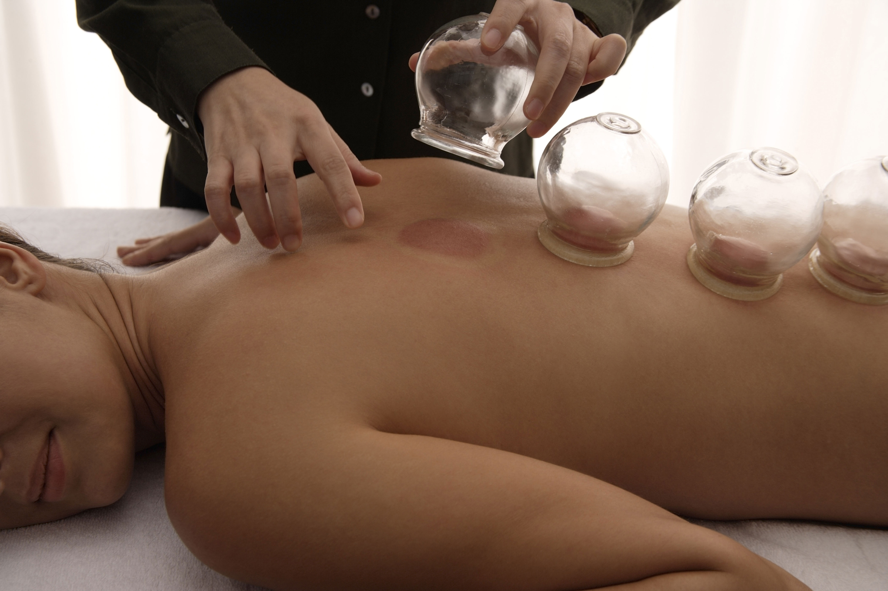

Baňkování
Baňkování neboli vakuoterapie je velmi stará metoda alternativní medicíny, při níž se malá oblast pokožky podrobí pomocí přikládání baněk podtlaku.
Baňky se přikládají na určená místa (reflexní zóny, akupunkturní body, ashi zóny) nebo se používají k masáži.
Baňkování se používá na onemocnění a problémy pohybového aparátu, k léčbě onemocnění trávicího a dýchacího aparátu, ale i k mírnění jiných vnitřních potíží.
Podle tradiční čínské medicíny se baňkování používá v regulaci toku krve (XUE) a čchi (QI).
Má napomáhat vytažení škodlivin (vítr, chlad, horko, vlhko) na povrch a jeho vyloučení.
Otevírá kožní póry a umožňuje eliminaci škodlivin.

| Služba | Délka | Cena |
|---|---|---|
| Přikládání baněk + masáž zad | 25 min | 300,- Kč |